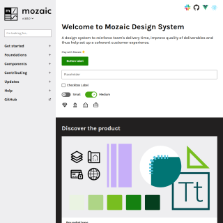
AdeoMozaic Design System
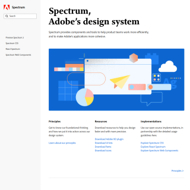
AdobeSpectrum
Alaska AirlinesAuro
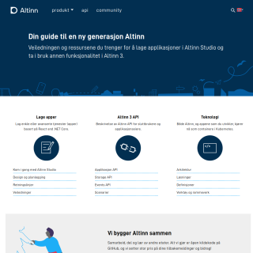
AltinnAltinn Design System
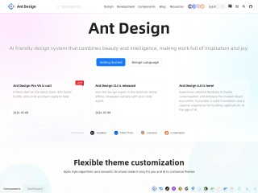
Ant FinancialAnt Design
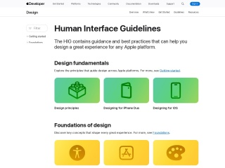
AppleHuman Interface Guidelines
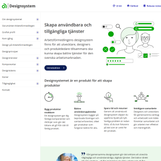
ArbetsförmedlingenDesign system
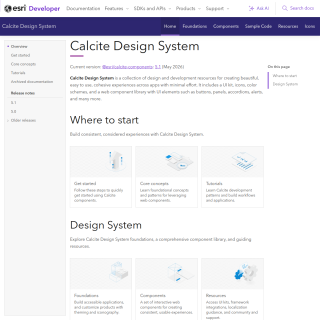
ArcGISCalcite
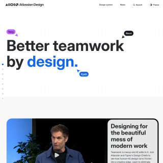
AtlassianAtlassian Design System
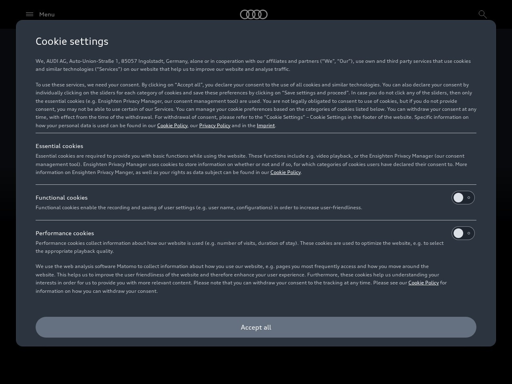
AudiAudi UI
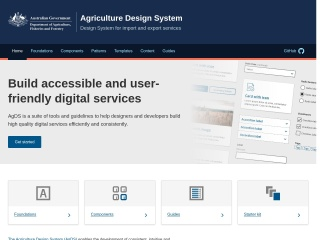
Australian Government, Department of Agriculture, Fisheries and ForestryAgriculture Design System (AgDS)
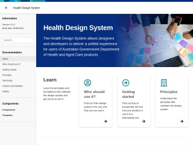
Australian Government, Department of HealthHealth Design System
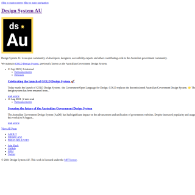
Australian Open Source CommunityGOLD Design System
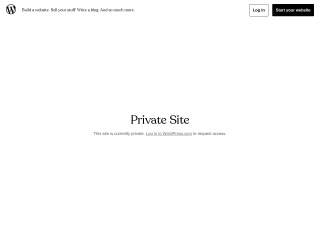
AutomatticWordpress.com design handbook
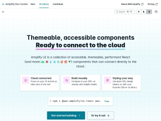
AWS AmplifyAmplify UI
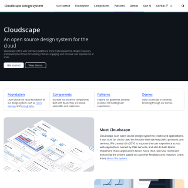
AWSCloudscape Design System
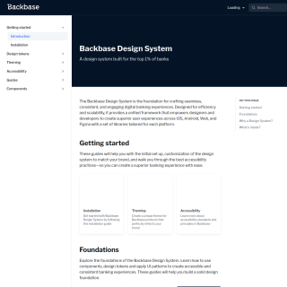
BackbaseDesign system
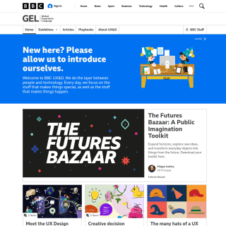
BBCGlobal Experience Language (GEL)
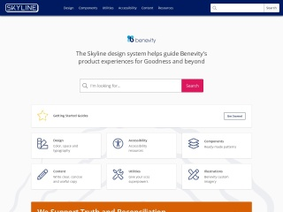
BenevitySkyline
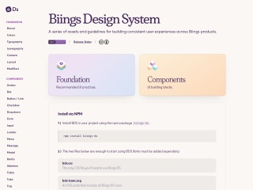
BiingsBiings Design System
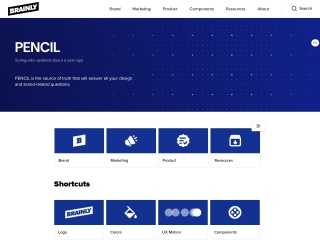
BrainlyDesign
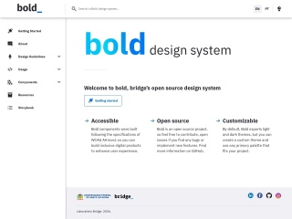
BridgeBold design system
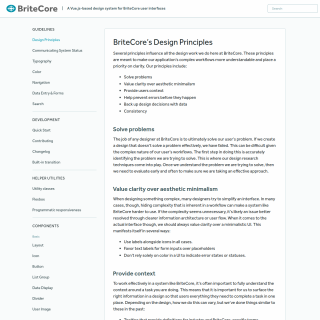
BrightcoreUI
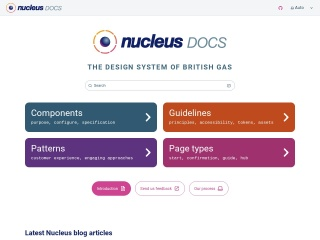
British GasNucleus Design System
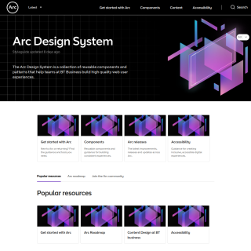
BTArc
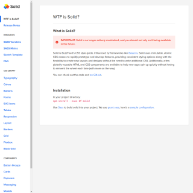
BuzzFeedSolid Style Guide
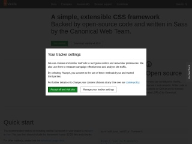
CanonicalVanilla framework
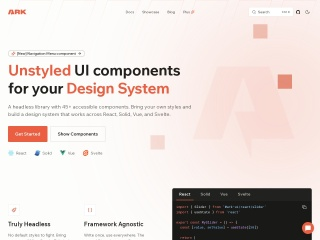
Chakra teamArk UI
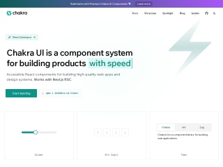
Chakra teamChakra UI
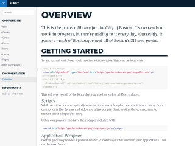
City of BostonFleet
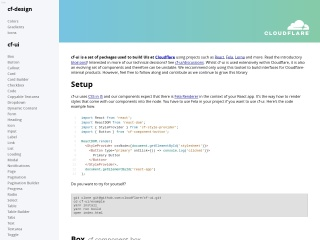
CloudflareCF-UI
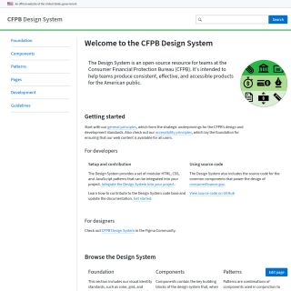
Consumer Financial Protection BureauCFPB Design Manual
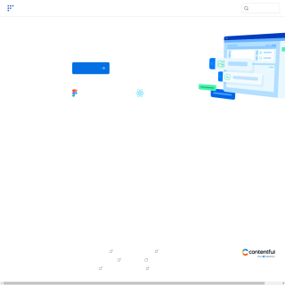
ContentfulForma 36
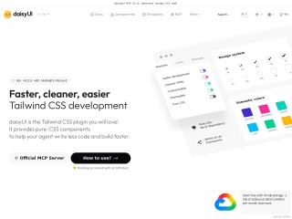
daisyUI
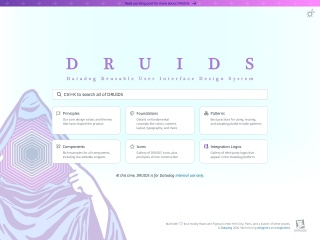
DatadogDruids
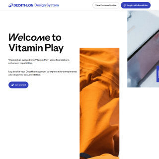
DecathlonDesign System - Vitamin
Design LanguageE-Trade
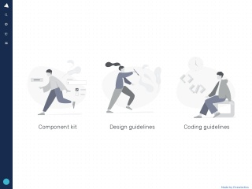
DrawboticsDrylus
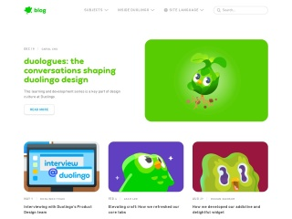
DuolingoDesign guidelines
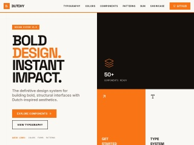
Dutchy Design System
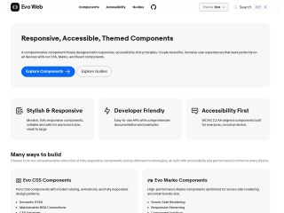
eBaySkin
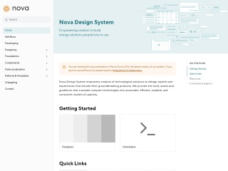
Elia GroupNova
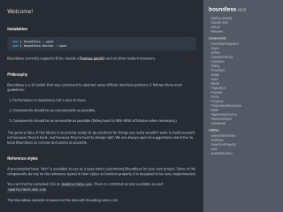
EnigmaBoundless
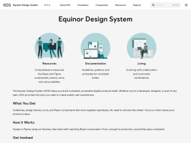
EquinorEDS
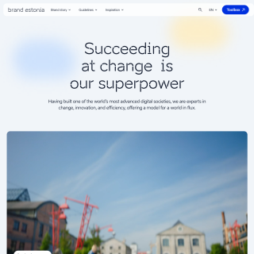
EstoniaBrand Estonia
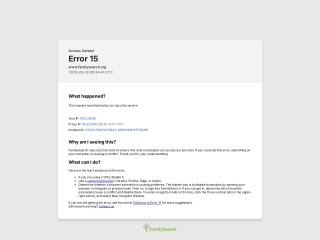
Family SearchFrontier
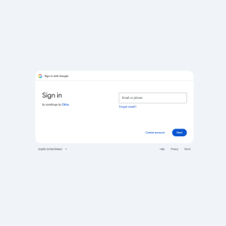
Financial TimesOrigami
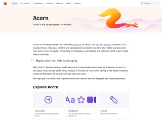
FirefoxPhoton Design System
Flowbite
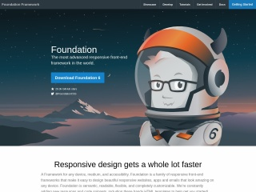
Foundation
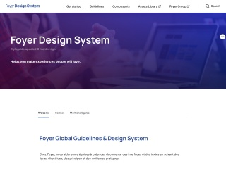
FoyerFoyer Design System
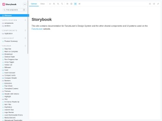
FutureLearnFutureLearn Pattern Library
General ElectricPredix Design System
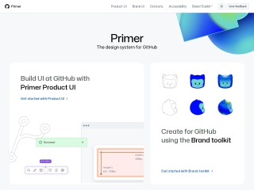
GithubPrimer
GitLabPajamas Design System

GNOMEHuman Interface Guidelines
GO-JEKAsphalt
Goldman SachsGoldman Sachs Design System
GoodBarberGoodBarber Design System
GoogleMaterial 2
GoogleMaterial Design
GOV.UKGOV.UK Design System
Government of CanadaAurora Design System
GympassYoga
Helios Design SystemHashicorp
Help ScoutHelp Scout Style Guide
HelsinkiHelsinki Design System
HerokuHeroki Design
HeroUI
Hewlett PackardGrommet
HorizonX
HubspotCanvas Design System
HudlUniform
IBMCarbon Design System
Indiana UniversityRivet
InforInfor Design System
Instructure IncInstructure UI
IntuitDesign system
IntuitQuickBooks Design System

Ionic Framework
Italian Public Administration.it Designers Italy
JSTORPharos
Just Eat TakeawayPIE
KajabiSage

KDEHuman Interface Guidelines
kickstartkickstartDS
KoliBriKoliBri - Public UI
Kontur
LINELINE Design System
LoomLens
Louder Than TenManual
Mail.ruGroup Paradigm
MailChimpMailchimp Content Styleguide
Mantine
MarvelMarvel Styleguide
MaterializeMaterialize CSS
MerckLiquid
MetaAstryx
MicrosoftFluent
MicrosoftFluent UI
MongoDBMongoDB Design System
MonzoMonzo Tone of Voice
MorningstarMorningstar Design System
Mozilla firefoxAcorn
MozillaProtocol
MUIMaterial UI
Mutual of OmahaDigital Design Guide
MYOBFeelix

NASAHorizon Design System (HDS)
National InstrumentsFuse
NationBuilderRadius
NeurodiversityDesign system
New York StateNew York State Design System
New Zealand GovernmentNew Zealand Government Design System (NZGDS)
New Zealand Ministry of EducationDesign System
News UKNewsKit
NHS.UKService Manual
nibMesh Design System
NordhealthNord Design System
NS Dutch RailwaysTractie
NulogyNulogy Design System
PAQTGraphite Design System
Pega DigitalBolt Design System
PinterestGestalt
PluralsightPluralsight Design System
PricelinePriceline One
PusherChameleon

RadianUI
RadixRadix UI
Rambler

RamblerRatio
Red HatPatternfly Design System
REICedar
Royal CaninRoyal Canin's Design Language
SalesforceLightning Design System
SamsungTizen CircularUI
SAP OpenUI
SAPFiori Fundamentals
SeekBraid Design System
SeekSeek Style Guide
SemanticSemantic UI
Semi Design
SemrushIntergalactic
ServiceTitanAnvil
shadcn/ui
Shizen Design System
ShopifyPolaris
Siemens iX
Singapore Government Design System
SkyscannerBackpack
SpareBank 1SpareBank 1 Designsystem
Sprout SocialSeeds
Stack OverflowStacks
State of New South WalesDigital NSW
Tailwind LabsHeadless UI
ThumbtackThumbprint
TOTVSPortinari UI
Transport for West Midlands
TrelloNachos
U.S. Department of Veterans AffairsDesign system
U.S. GovernmentU.S. Web Design System
UberBase Web
United States Centers for Medicare & Medicaid ServicesCMS Design System
United States Space ForceAstro
uSwitchuStyle
VercelGeist
VMwareClarity Design System
VTEXStyleguide
Vue Design System
WebexMomentum Design System
Welcome to the JungleWelcome UI
WeWorkRay
WiseDesign system
WonderflowWanda Design System
YelpYelp Styleguide
ZendeskGarden